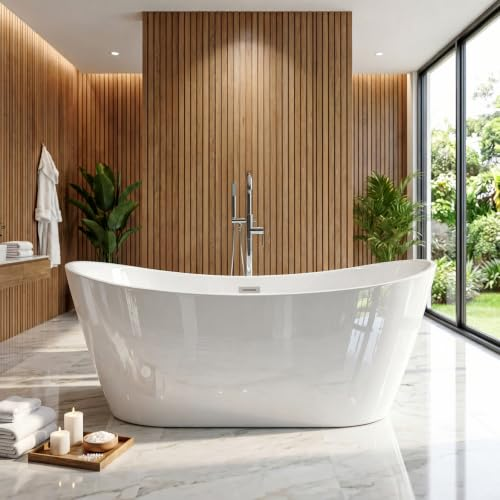
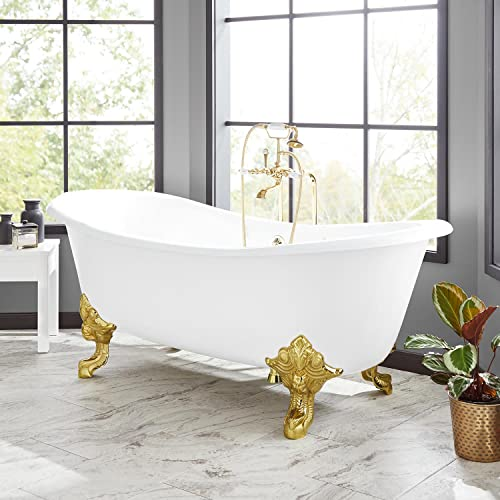
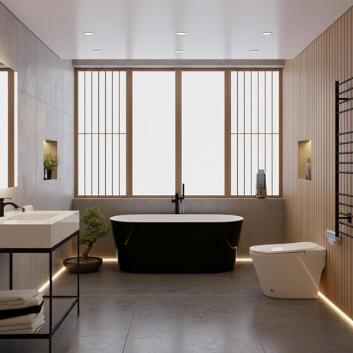
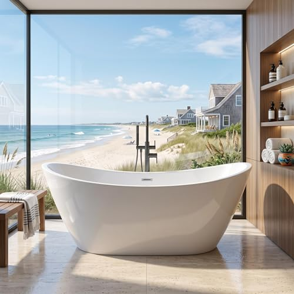
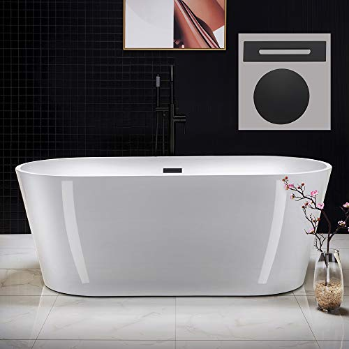
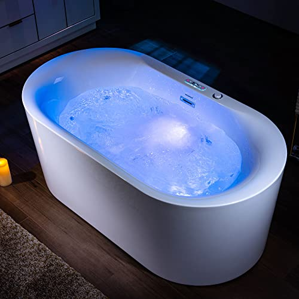
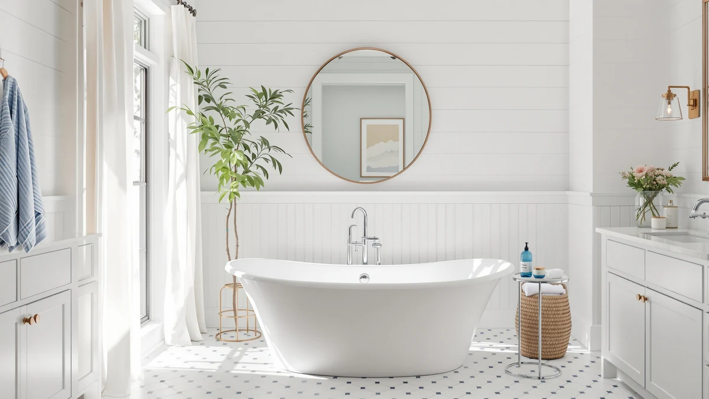
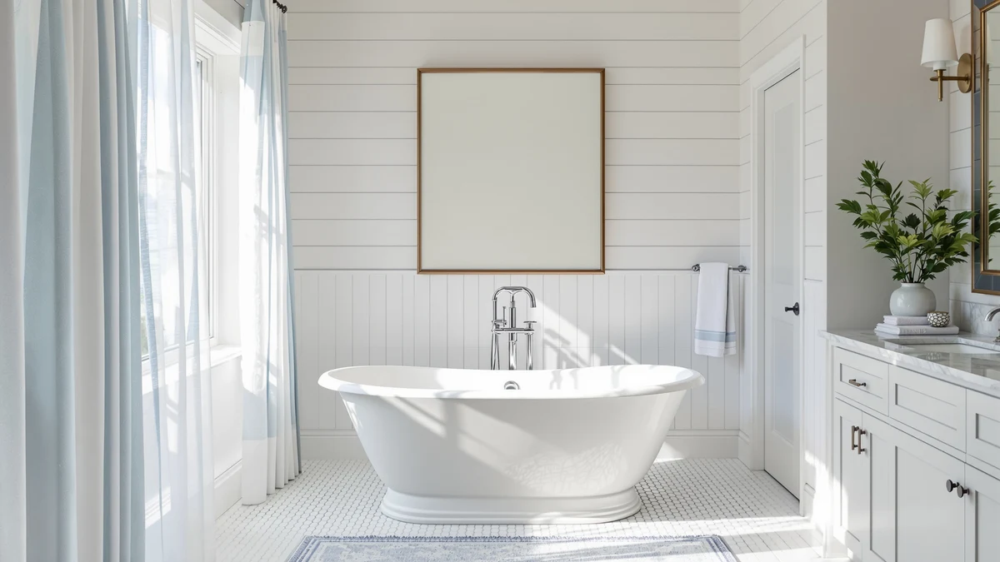

A freestanding tub is bought with a tape measure, not a photo.
Every freestanding tub looks good in a sunlit product photo. The one you soak in for years and the one you regret differ on four points: whether it fits the room and the way in, the material, the water depth and the plumbing. We compare tubs on those points, using spec sheets, current Amazon prices and what verified owners report.
Our 7 picks, side by side
From our full comparison of freestanding bathtubs. Each one wins a specific job.
| Pick | Product | Price | Buy |
|---|---|---|---|
| Our Pick | WOODBRIDGE 59" Acrylic Freestanding Bathtub Contemporary Soaking White TubThe best freestanding tub for most bathrooms | $769.00 | Check price |
| Budget Pick |  59" Acrylic Freestanding Bathtub DeepA deep two-person soak for the price of a good faucet | $446.49 | Check price |
| Premium Pick |  Signature Hardware 312541 Lena 72" Cast Iron Soaking Clawfoot TubA heirloom cast-iron clawfoot for a statement bathroom | $2,825.44 | Check price |
| Best Compact |  ANZZI 55 Inch Acrylic Freestanding Bathtub In Glossy WhiteA pre-plumbed 55" tub for small bathrooms | $599.00 | Check price |
| Best Large Value |  67" Acrylic Freestanding Bathtub DeepA big 67" soaker with a non-slip floor, for less | $754.99 | Check price |
| Runner-Up |  WOODBRIDGE 67" Acrylic Freestanding Bathtub Contemporary Soaking TubThe full-size WOODBRIDGE for bigger bathrooms | $699.00 | Check price |
| Best With Jets |  WOODBRIDGE 59" × 31-1/2" Compact Whirlpool & AirA compact whirlpool and air tub with heated soak | $1,754.00 | Check price |
Just published
New reviews and guides go up every day.

Medunjess Resin Stone Free Standing Bathtub Review

Muiryn Solid Surface Freestanding Bathtub Review

How to Clean Under Bathtub: Complete Guide

How Much Space Around Freestanding Tub: Complete Guide
Find the right freestanding tub for your bathroom
Guides and reviews from across the site, grouped by the question they answer.
Size, space and floor
- How Much Space Around Freestanding Tub: Complete GuideGuide
- Bathtub for Small SpacesComparison
- Best Freestanding Tub for Small BathroomComparison
- How to Choose Best Freestanding Tub: Complete GuideGuide
- Freestanding Tub Floor Support & Weight Guide: Do You Need Reinforcement?Guide
- Best Freestanding Bathtub Buying GuideGuide
+ 1 more in all articles
Faucets, showers and care
- How to Clean Under Bathtub: Complete GuideGuide
- Best Freestanding Bathtub Side TableComparison
- Best Freestanding Bathtub FaucetComparison
- Best Freestanding Tub with ShowerComparison
- Best Freestanding Bath with ShowerComparison
- Best Freestanding Tub Faucets: Floor-Mount Fillers for Your Soaking TubGuide
+ 2 more in all articles
Jets and air tubs
- Best Freestanding Tubs with Air BubblesComparison
- Best Freestanding Bathtub with JetsComparison
- Best Whirlpool Freestanding Bathtubs: Jetted Soaking Tubs ReviewedComparison
- LARWORKS 71" Freestanding Whirlpool ReviewReview
- Empava Freestanding Whirlpool ReviewReview
- Empava Upgrade Acrylic Whirlpool ReviewReview
+ 4 more in all articles
Comfort for every bather
- Best Ergonomic Freestanding BathtubComparison
- Best Free Standing Bathtub for Tall PeopleComparison
- Freestanding Tub Easy to Get IntoComparison
- Best Freestanding Soaking Tub for TwoComparison
- Best Freestanding Tub with Lumbar SupportComparison
- Best Freestanding Tub for Short PersonComparison
+ 8 more in all articles
Budget to luxury
- Best Quality Freestanding BathtubComparison
- Best Value Freestanding BathtubComparison
- Best Selling Freestanding BathtubsComparison
- Best Luxury Freestanding BathtubsComparison
- Best Freestanding Tub under $1000Comparison
- Best Freestanding Tub for the MoneyComparison
Materials and brands
- Best Steel Enamel Freestanding BathtubsComparison
- Best Brand Freestanding TubComparison
- What Is the Best Material for a Freestanding Bathtub: Complete GuideGuide
- Acrylic vs Cast Iron Tub: Which Is Better?Comparison
- Best Freestanding Tub Brands: WOODBRIDGE vs FerdY vs Signature Hardware vs ANZZIComparison
- Best Clawfoot Freestanding Bathtubs: Classic Cast Iron Soaking TubsComparison
+ 38 more in all articles
How we research
What we compare
- Size: the outside length and width, the interior soaking length, and every doorway on the way in.
- Material: acrylic is light and warm to the touch; stone resin and cast iron hold heat longer but weigh far more.
- Depth and plumbing: water depth to the overflow, the drain position, and a faucet that is usually sold separately.
- Price: Amazon's current price, checked every night.
- What verified owners report after months of daily use.
What we don't do
We don't run a lab, and we don't claim to have installed or handled these products ourselves. Our picks come from published specifications, current Amazon prices and what verified owners report again and again.
Every Amazon link on this site is an affiliate link. It never decides the ranking.
Common questions
How much space do I need around a freestanding tub?
Most building codes require 21 inches of clear floor in front of a tub, and 30 inches feels far better on the side you step out of. A freestanding tub also needs room behind and beside it for cleaning and plumbing, more with a floor-mounted faucet. Our clearance guide walks through the measurements.
Will my floor hold a freestanding tub?
A ground-floor bathroom on a concrete slab usually carries a filled tub without changes. Upper floors over wood joists are where it matters, especially with cast iron or stone resin, which weigh far more empty than acrylic. If the tub is heavy or the framing is old, have a contractor or structural engineer check the joists before delivery, as our floor support guide explains.
Acrylic or cast iron?
Acrylic is lighter, warm to the touch, easier to carry in and install, and far cheaper. Cast iron holds heat longer and its enamel resists scratches for decades, but it weighs several hundred pounds empty, which usually means checking the floor and hiring installers. Our acrylic vs cast iron comparison covers the trade-offs.